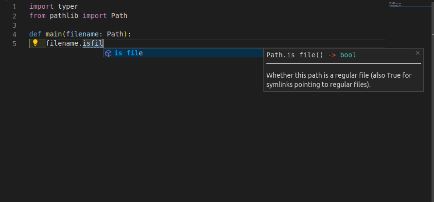
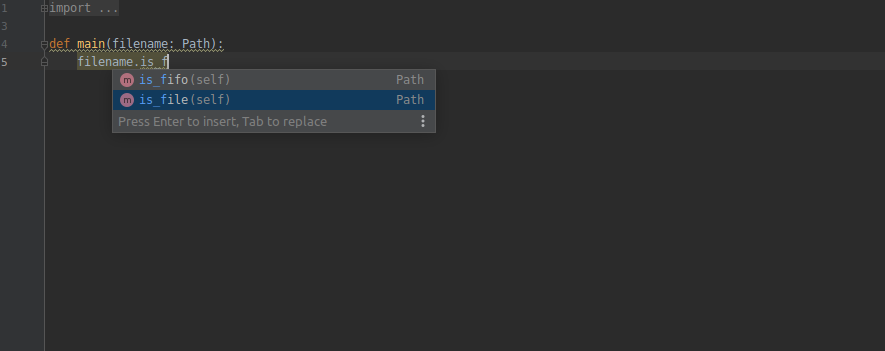

Design based on FastAPI¶

Typer is FastAPI’s little sibling.
It follows the same design and ideas. If you know FastAPI, you already know Typer… more or less.
Just Modern Python¶
It’s all based on standard Python 3.6 type declarations. No new syntax to learn. Just standard modern Python.
If you need a 2 minute refresher of how to use Python types (even if you don’t use FastAPI or Typer), check the FastAPI tutorial section: Python types intro.
You will also see a 20 seconds refresher on the section Tutorial - User Guide: First Steps{.internal-link target=_blank}.
Editor support¶
Typer was designed to be easy and intuitive to use, to ensure the best development experience. With autocompletion everywhere.
You will rarely need to come back to the docs.
Here’s how your editor might help you:

in PyCharm:

You will get completion for everything. That’s something no other CLI library provides right now.
No more guessing what type was that variable, if it could be None, etc.
Short¶
It has sensible defaults for everything, with optional configurations everywhere. All the parameters can be fine-tuned to do what you need, customize the help, callbacks per parameter, make them required or not, etc.
But by default, it all “just works”.
User friendly CLI apps¶
The resulting CLI apps created with Typer have the nice features of many “pro” command line programs you probably already love.
Automatic help options for the main CLI program and all its subcommands.
Automatic command and subcommand structure handling (you will see more about subcommands in the Tutorial - User Guide).
Automatic completion for the CLI app in all operating systems, in all the shells (Bash, Zsh, Fish, PowerShell), so that the final user of your app can just hit TAB and get the available options or subcommands. *
!!! note “* Auto completion”
Auto completion works when you create a package (installable with pip). Or when using Typer CLI{.internal-link target=_blank}.
If you also add `shellingham` as a dependency, **Typer** will use it to auto-detect the current shell when installing completion.
**Typer** will automatically create 2 *CLI options*:
* `--install-completion`: Install completion for the current shell.
* `--show-completion`: Show completion for the current shell, to copy it or customize the installation.
If you didn't add `shellingham` those *CLI options* take a value with the name of the shell to install completion for, e.g.:
* `--install-completion bash`.
* `--show-completion powershell`.
Then you can tell the user to install completion after installing your CLI program and the rest will just work.
!!! tip
Typer’s completion is implemented internally, it uses ideas and components from Click and ideas from click-completion, but it doesn’t use click-completion and re-implements some of the relevant parts of Click.
Then it extends those ideas with features and bug fixes. For example, **Typer** programs also support modern versions of PowerShell (e.g. in Windows 10) among all the other shells.
The power of Click¶
Click is one of the most popular tools for building CLIs in Python.
Typer is based on it, so you get all its benefits, plug-ins, robustness, etc.
But you can write simpler code with the benefits of modern Python.
Tested¶
100% test coverage.
100% type annotated code base.
Used in production applications.